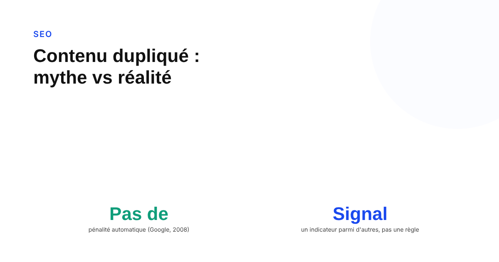
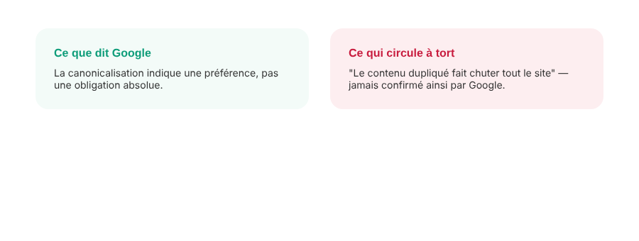

Contenu dupliqué : quand c'est vraiment un problème SEO, et quand ça ne l'est pas
« Pénalité contenu dupliqué » : l'expression circule depuis vingt ans dans le SEO, alors que Google l'a démentie explicitement dès 2008. Ce que la duplication provoque réellement, et pourquoi la distinction entre ses deux formes change tout.

Peu de termes SEO sont aussi mal compris que la « pénalité contenu dupliqué ». L'expression suggère une sanction automatique et punitive. Google a pourtant été explicite sur ce point, et depuis longtemps : comprendre ce qui se passe réellement derrière le terme évite de corriger le mauvais problème.
Le mythe de la « pénalité contenu dupliqué »
En 2008 déjà, Google publiait sur son blog officiel un billet au titre sans ambiguïté : « Demystifying the duplicate content penalty ». Le message : il n'existe pas de pénalité contenu dupliqué, au moins pas dans le sens où la plupart des gens l'entendent. La documentation actuelle de Search Central reprend la même position : une part de contenu dupliqué est normale sur un site, et ce n'est pas en soi une violation des règles anti-spam de Google. Une action manuelle ne vise que les cas où l'intention est manifestement de tromper l'utilisateur ou de manipuler les résultats de recherche — pas la duplication ordinaire qui existe sur la quasi-totalité des sites.
Ce que Google fait réellement : canonicalisation, pas sanction
Face à des pages dont le contenu principal est identique ou très proche, Google les regroupe en cluster, puis sélectionne celle qu'il juge objectivement la plus complète et la plus utile pour l'utilisateur. Plusieurs signaux entrent en jeu : le protocole HTTP ou HTTPS, les redirections en place, la présence dans le sitemap, et les annotations rel=canonical posées par le site. La page retenue devient la version canonique, explorée plus régulièrement ; les autres sont explorées moins souvent. Indiquer une préférence de canonical reste, dans les mots mêmes de Google, « un indice, pas une règle » : le moteur peut choisir une autre version s'il la juge plus pertinente, par exemple une page mobile pour un utilisateur mobile.

Deux formes de duplication très différentes
La duplication interne naît des mécaniques normales d'un site : variantes de couleur d'un même produit, pages générées par des paramètres de tri ou de filtre, versions HTTP et HTTPS coexistantes, contenu accessible via plusieurs chemins d'URL. C'est un problème technique à corriger avec les bons outils (canonical, redirections, paramètres d'URL déclarés), sans risque de sanction en soi. Le contenu copié depuis l'extérieur — scraping, syndication sans attribution, republication intégrale — relève d'une autre logique : Google cherche alors à identifier et afficher la source originale plutôt que la copie, ce qui pénalise la visibilité de cette dernière sans qu'il s'agisse d'une sanction punitive au sens propre.
Le vrai risque : dilution, pas disparition
Le risque concret de la duplication interne non gérée n'est pas une sanction, mais une dilution : les liens entrants et les signaux d'autorité qui pourraient se concentrer sur une seule page se répartissent entre plusieurs URLs concurrentes, ce qui affaiblit chacune d'elles. S'ajoute un problème pratique : un suivi de performance faussé, puisque le trafic et les clics se répartissent entre plusieurs pages au lieu de se cumuler sur une seule version mesurable dans Search Console. Ce sont des pertes d'efficacité, pas des punitions — mais leur effet cumulé sur un site de taille conséquente peut rester significatif.
Quand s'en préoccuper vraiment
Un site e-commerce avec des variantes produit par taille ou couleur, un site avec des URLs à paramètres de tri, ou un site migré de HTTP à HTTPS sans nettoyage complet des anciennes URLs sont les cas les plus fréquents à vérifier. La priorité : poser un rel=canonical cohérent vers la version à privilégier, rediriger en 301 les URLs obsolètes, et déclarer dans Search Console les paramètres d'URL qui ne doivent pas être traités comme des pages distinctes. Pour du contenu copié par un tiers depuis votre site, la voie correcte reste la demande de retrait DMCA ou l'outil de signalement de Search Console — pas une inquiétude sur votre propre classement, qui n'est en principe pas affecté par cette copie.
FAQ
Le contenu dupliqué entraîne-t-il une pénalité Google ?
Non. Google l'a affirmé explicitement dès 2008 sur son blog officiel : il n'existe pas de « pénalité contenu dupliqué ». La documentation actuelle de Search Central confirme qu'une part de duplication est normale sur un site et ne constitue pas en soi une violation des règles anti-spam, sauf intention manifeste de manipuler les résultats de recherche.
Comment Google choisit-il quelle version afficher en cas de duplication ?
Google regroupe les pages dont le contenu principal est identique ou très similaire, puis sélectionne celle qu'il juge la plus complète et la plus utile pour l'utilisateur, en s'appuyant sur des signaux comme le protocole HTTPS, les redirections, la présence dans le sitemap et les annotations rel=canonical. Indiquer une préférence de canonical reste une suggestion, pas un ordre que Google doit suivre.
La duplication interne (variantes produit, paramètres d'URL) est-elle aussi risquée que le contenu copié depuis un autre site ?
Non, ce sont deux problèmes différents. La duplication interne (variantes de couleur d'un produit, URLs avec paramètres de tri) est un problème de dilution de signaux à corriger techniquement, sans risque de sanction en soi. Le scraping ou la copie de contenu externe relève d'un autre registre : Google cherche alors à afficher la source originale, pas la copie, ce qui pénalise la visibilité de la copie sans qu'il s'agisse d'une sanction punitive.
Envie d'un audit technique qui identifie vos vrais problèmes de duplication ?
Pour aller plus loin, voir la page SEO, et l'article SEO international : la méthode hreflang sans les erreurs qui l'annulent.
Pour continuer sur ce sujet.